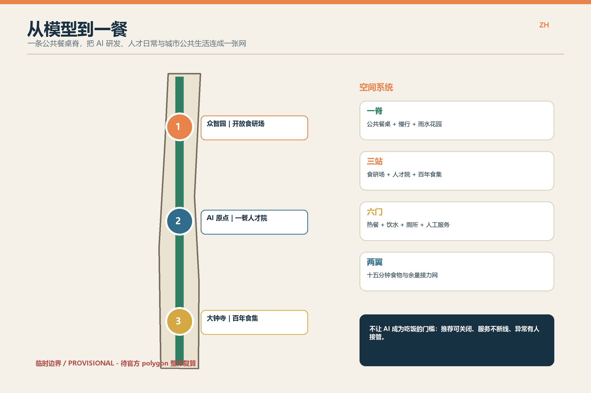
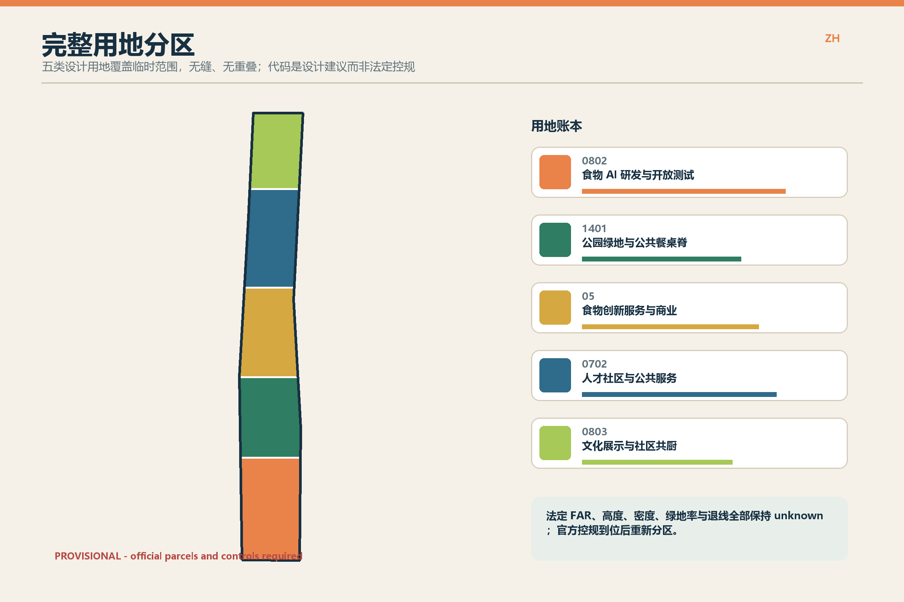
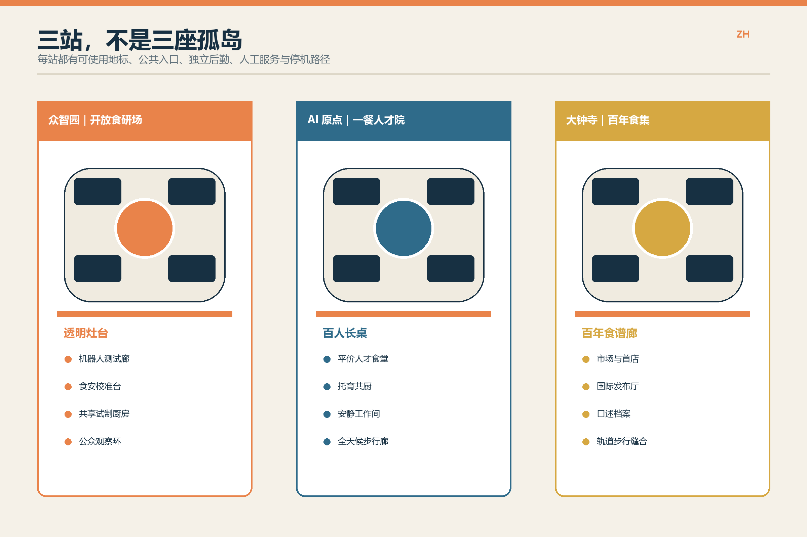
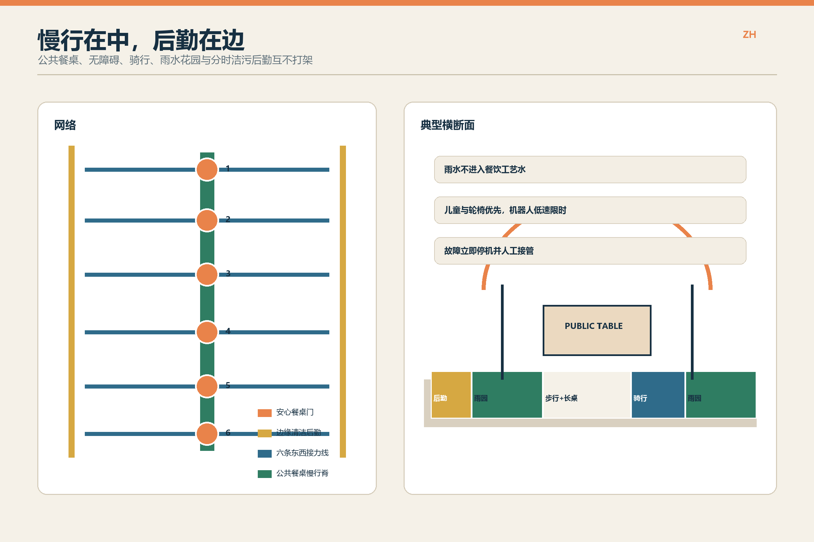
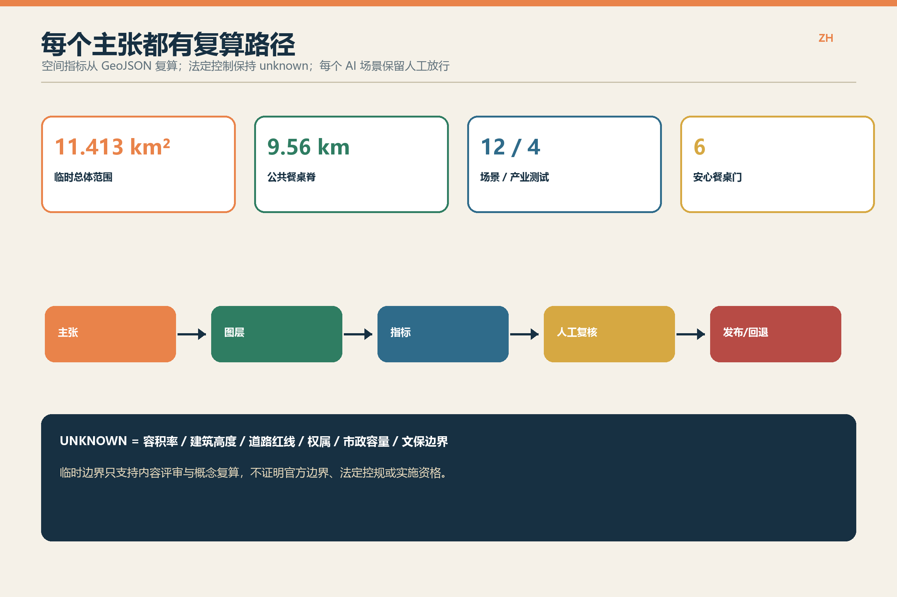

从模型到一餐｜京张 AI 食物公地
把模型研发经过公开共测、人工放行与日常使用，最终落到每一餐。
EN
临时边界：仅用于概念设计与复算，待官方 polygons 发布后整体校准。
12
AI+ 场景
4
产业共测
6
用户画像
6
安心餐桌门
专业包审阅索引
总览地图
三层范围
重点区域
用地分区
交通慢行
蓝绿公共空间
建筑
更新项目
AI 场景
核心指标
任务覆盖
自检状态
来源
假设
site_area_sqm
green_ratio
public_space_ratio
总体概念
用地结构
三处重点区
慢行与后勤
指标与证据

总体概念

用地结构

三处重点区

慢行与后勤

指标与证据